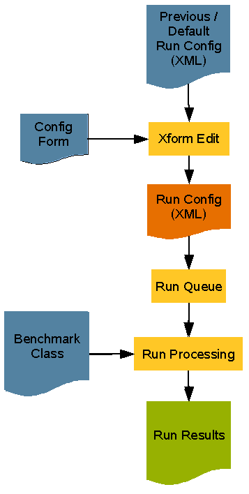

The Faban harness is a tool to help automate running benchmarks. It does this by a well-defined process. The Faban Driver Framework Developers Guide explains how to develop a benchmark to run in Faban. That framework provides a way to define the workload logic, but we still need something to glue the benchmark to the harness . This glue is described in this guide. Benchmarks developed using the Faban driver framework (hereinafter referred to simply as Faban benchmark) can take advantage of the built-in process logic for the Faban Driver Framework. Since this is generally standard, you may not need to implement anything additional. And even if you find that the default process doesn't work for you, you can easily extend it. For benchmarks developed outside the faban framework, you will have to implement additional process glue to link the benchmark to the harness. In the best case you may be able to copy the logic from one of the sample benchmarks or an existing benchmark and adapt it.
Faban framework also provides for pluggable services and
tools. A service is a module in Faban that allows interactions with
specific server software. Common services
used for many tests are OracleService, Apache2HttpdService,
MemcachedService, MySQLService, GlassFishAppServerService, etc. Many of
such server software provide observerability interfaces and tools that
can tell users what was happening in the server during the benchmark
run. For example, awr is a
tool to look into the Oracle database, MySQL provides a query
interface to read certain MySQL counters, etc. The pluggable tools
interface allows for writing accessors or wrappers for these tools in a
standard way, allowing the Faban harness to invoke them and collect
information at proper times during the experiments. Some of
the services and tools examples are packaged with the Faban kit which
are located in samples/services directory. Services and tools are
enabled by certain entries in the run configuration file.
There is no direct API call into the services and tools from the
benchmark class.
The following components are required to run a benchmark in
the
Faban
harness:
The first three files reside in the deploy
sub-directory of the benchmark directory (as for e.g.
samples/benchmarks/web1/deploy). The harness hook is Java code. The
benchmark
deployment descriptor references all files as well as the harness
hook's fully qualified class name.
The entire benchmark run process and how the components described above fit in is described in the figure below. The harness uses the current (or default if this is the first run) run configuration file and the submission form to generate the web form for the run. Using the user-entered values, it then generates a new run configuration file for this run. The run is then placed on the run-queue to be executed by the run daemon. When ready to run, the Benchmark class processes the run and if defined, uses the harness hook.

Services and tools are Faban components representing certain
server software and the observerability interfaces for such software.
If services are configured in the run configuration file and restart
for the services are enabled, they will get started/restarted by the
Faban
harness before the run starts. The same services will get
stopped by Faban after the run
ends. Similarly, tools get configured before the run starts.
However, they actually collect
information during the steady state. Tools usually need to access
service configuration information in order to connect to the
right server and collect statistics from
or for the given service instance. Multiple services and tools may be
bundled in a single package. To implement services and/or tools,
the following components are needed..
The xml files reside in the deploy sub-directory of the services project (as for e.g. samples/services/MySQLService/deploy). Alternatively, you may also provide services and tools as part of a benchmark, sharing the directories and class structure with your benchmark. This will be discussed further in Services/Tools Deployment.
Implementing a benchmark, service or tool module involves
coming up with all the
components
described, respectively, and packaging them correctly before deploying
them into
the Faban harness. Luckily, the sample provided with the
Faban package provides a good starting point for a benchmark/service
project
structure. It has a very generic ant build file that works for most
basic benchmarks, services, and tools, and can be extended for even
more complex ones. Also
it provides a good starting point for all the components mentioned
above. We will use the provided samples in most of the following
discussions.
It is a good idea now to copy the samples/benchmarks/web101(for
benchmarks) and samples/services/MySQLService(for services) directory
and create a
project using your IDE of choice with this sample.
In order to understand how the benchmarks, services, and tools fit together, the following describe the call sequence for annotated methods in the benchmark, services, and tools. You can then decide based on the sequence what infrastructures are available and what can be done from what annotated operaion.
Please see The Benchmark Class and The Service and Tool Classes for more information on these annotations.
Before we start getting our hands dirty, we'll understand a generic Faban project structure. Part of it is well reflected in the web101 sample. However, the structure below also shows optional paths not in the sample:
MyBenchmarkProject
bin
build
classes
lib
config
security
driver.policy
logging.properties
run.xml
deploy
benchmark.xml
config.xhtml
run.xml
services-tools.xml
toolset.xml
lib
public_html
resources
sbin
agent.sh
master.sh
multi.sh
registry.sh
setenv.sh
src
build.properties
build.xml
README
Let's start with the most significant directories first.